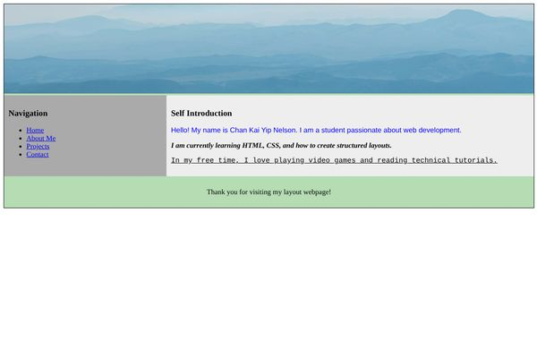
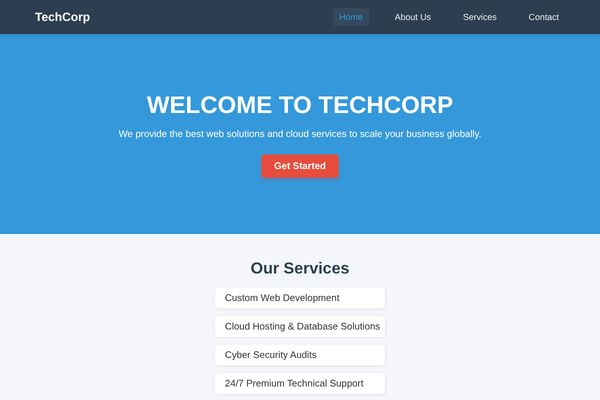

Part-time jobs, volunteer work and the projects I built in class.
Every job taught me something different: how to listen to clients, how to explain technical ideas in a simple way, and how to work with a team. Click a role to open it.
Jun 2025 – Aug 2025 · Freelance
Jul 2024 – May 2025 · Part-time
2024 · Volunteer
In CIS222 I built web pages every week: layouts, forms, CSS buttons and JavaScript tools. Some of them are pinned below. The full collection is in the Projects file.
Open the Projects fileA page with a banner, a navigation menu, a self-introduction and a footer, built with div and flexbox.

A company home page with a sticky navigation bar, a list of services and an account registration form.
